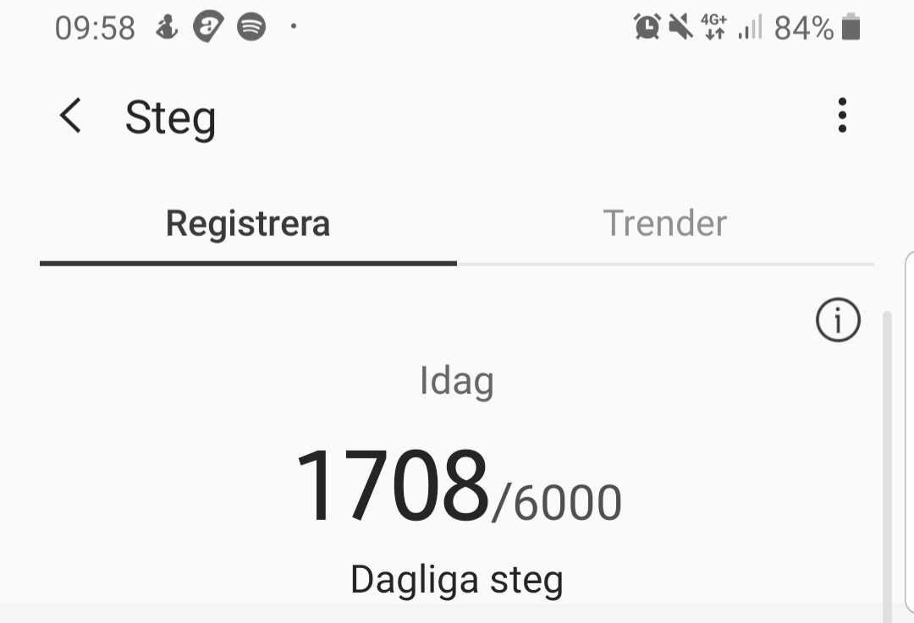

Vår problemformulering tog sig först uttryck genom att vi upplevde en viss friktion när vi ville hitta data i Samsung Health angående veckor och månader. I nuläget behöver man som användare klicka sig igenom tre skärmar för att komma åt information man söker.
Ett annat problem är formuleringarna som Samsung använder sig av, “Registrera och “Trender”. Vad ska vi som användare till exempel registrera och är det självklart att “Trender” låter oss förstå att det är här vi hittar vår data utifrån veckor alternativt månader?
Våra hypoteser är således:
Istället för att behöva klicka sig in till steg-historiken ger vi användaren all info direkt genom en “widget” när man öppnar appen. Den tillhörande statistiken står direkt under själva grafen.
Vår lösning blir att lägga ut alternativen på rad och nyttja den mentala modellen för “zoom”, så att man går ut från dag till större tidsperspektiv. Lägg märke till att tjockleken på staplarna ändras för att särskilja tidsperspektiven och göra det tydligare.